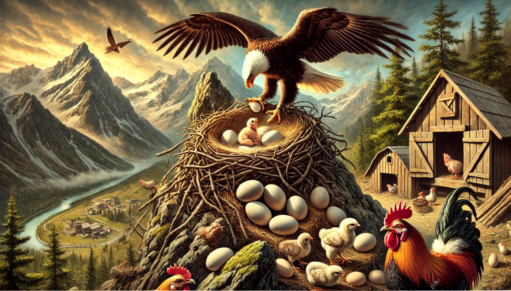

حكاية النسر

كان هناك أنثى نسرٍ تعيش على قمم إحدى الجبال، وتضع عشّها على واحدةٍ من الأشجار المنتشرة على ذاك الجبل،
وفي يومٍ من الأيام باضت أنثى النسر أربع بيضات، إلّا أنّ زلزالاً عنيفاً هزّ الجبل،
فسقطت إحدى البيضات من العشّ، ثمّ تدحرجت إلى الأسفل حتى استقرّت في قنّ للدجاج،
فأخذتها إحدى الدجاجات واحتضنتها حتى فقست، وخرج منها نسرٌ صغير.
ربّت الدجاجات فرخ النسر مع فراخهنّ، فبدأ يكبر مع فراخ الدجاج ويتعلّم معها، وطوال هذا الوقت ظلّ يظنّ أنّه دجاجة، وفي أحد الأيّام كان النسر الصغير يلعب مع فراخ الدجاج في الساحة،
فرأى مجموعةً من النّسور تحلق عالياً، فتمنّى لو أنه يستطيع الطيران مثلها، لكنّ الدجاجات بدأن بالسخرية والاستهزاء منه،
وقالت له إحدى الدجاجات: "أنت دجاجة، ولن تستطيع التّحليق كالنّسور"، حزن النسر الصغير كثيراً، ولكنّه استسلم
ونسي حلمه بالتّحليق في السماء، ولم يلبث أن مات بعد أن عاش حياةً طويلةً كحياة الدّجاج.